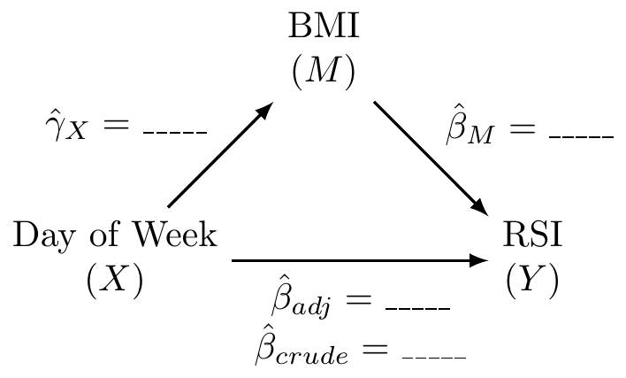

Code
dat <- read.csv('../../.data/Surgery_Timing.csv')Alex Kaizer
University of Colorado-Anschutz Medical Campus
This page includes optional practice problems, many of which are structured to assist you on the homework with Solutions provided on a separate page. Data sets, if needed, are provided on the BIOS 6618 Canvas page for students registered for the course.
This week’s extra practice exercises focus on the wonderfully wide world of applications for MLR: confounding, mediation, interactions, general linear hypothesis testing, and polynomial regression.
All of our exercises will use the surgery timing data set (Surgery_Timing.csv) provided by the TSHS section of the American Statistical Association. We can load the data into R with the following line of code:
The following table summarizes the variables we will be exploring and provide brief definitions:
| Variable | Code Name | Description |
|---|---|---|
| Risk Stratification Index (RSI) for In-Hospital Complications | complication_rsi |
Estimated risk of having an in-hospital complication. |
| Day of Week | dow |
Weekday surgery took place (1=Monday, 5=Friday) |
| Operation Time | hour |
Timing of operation during the day (06:00 to 19:00) |
| Phase of Moon | moonphase |
Moon phase during procedure (1=new, 2=first quarter, 3=full, 4=last quarter) |
| Age | age |
Age in years |
| BMI | bmi |
Body mass index (kg/m2) |
| AHRQ Procedure Category | ahrq_ccs |
US Agency for Healthcare Research and Quality’s Clinical Classifications Software procedure category |
| Complication Observed | complication |
In-hospital complication |
| Diabetes | baseline_diabetes |
Diabetes present at baseline |
We will use linear regression to examine the relationship between the outcome of RSI for in-hospital complications with surgery on a Monday/Tuesday (versus Wednesday/Thursday/Friday) and moon phase to answer the following exercises:
What is the unadjusted (crude) estimate for the association between RSI and day of the week? Write a brief, but complete, summary of the relationship between RSI and day of the week. Hint: you will need to create a new variable for day of the week.
Adjusting for the effect of moon phase, what is the adjusted estimate for the association between RSI and day of the week? Write a brief, but complete, summary of the relationship between RSI and day of the week adjusting for moon phase.
Is moon phase a confounder of the association between RSI and day of the week based on the operational criterion? Should you report the results from (A) or (B)? Justify your answer.
We will use linear regression to examine the relationship between the outcome of RSI for in-hospital complications with surgery on a Monday/Tuesday (versus Wednesday/Thursday/Friday) and BMI of the patient potential mediator to complete the following exercises:
Fit the three fundamental models of mediation analysis and fill in the following DAG:

What is the proportion/percent mediated by age?
What is the 95% CI and corresponding p-value for the proportion/percent mediated by age using the normal approximation to estimate the standard error (i.e., Sobel’s test)?
Use linear regression to examine the relationship between RSI for in-hospital complications and BMI. In this exercise you will examine whether the magnitude of the association between RSI (the response) and BMI (the primary explanatory variable) depends on whether the patient has diabetes.
Write down the fitted regression equation for the regression of RSI on BMI, diabetes, and the interaction between the two. Provide an interpretation for each of the coefficients in the model (including the intercept).
Test whether the relationship between RSI and BMI depends on whether the patient had diabetes.
What is the regression equation for patients who don’t have diabetes?
What is the regression equation for patients with diabetes?
Create a scatterplot of RSI versus BMI, using different symbols and separate regression lines for patients with and without diabetes.
Test if the slope for BMI for those who don’t have diabetes is significantly different from 0.
Test if the slope for BMI for those who do have diabetes is significantly different from 0.
Provide a brief, but complete, summary of the relationship between RSI and BMI, accounting for any observed interaction with diabetes (i.e., if there is a significant interaction, interpret those who do and don’t have diabetes separately).
For this exercise, subset the data set to only those with an in-hospital complication recorded and those who have hip replacements (i.e., dat$ahrq_ccs=='Hip replacement; total and partial').
Fit a simple linear regression model for the outcome of RSI for in-hospital complications with age as the predictor.
Fit a polynomial regression model that adds a squared term for age.
Create a scatterplot of the data and add the predicted regression lines for each model.
Based on the model output and figure, is there evidence that a quadratic model may be more appropriate than the simple linear regression model?
Fit a linear regression model for the outcome of RSI for in-hospital complication with day of the week as a predictor for all days.
Using a general linear hypothesis, test if the mean RSI on Tuesday and Wednesday are equal to each other.
Using a general linear hypothesis, test if the mean RSI on Monday is equal to two times the RSI on Thursday.
Using a general linear hypothesis, test both 5b and 5c simultaneously.
---
title: "Week 11 Practice Problems"
author:
name: Alex Kaizer
roles: "Instructor"
affiliation: University of Colorado-Anschutz Medical Campus
toc: true
toc_float: true
toc-location: left
format:
html:
code-fold: show
code-overflow: wrap
code-tools: true
---
```{r, echo=F, message=F, warning=F}
library(kableExtra)
library(dplyr)
```
This page includes optional practice problems, many of which are structured to assist you on the homework with [Solutions provided on a separate page](/labs/prac11s/index.qmd). Data sets, if needed, are provided on the BIOS 6618 Canvas page for students registered for the course.
This week's extra practice exercises focus on the wonderfully wide world of applications for MLR: confounding, mediation, interactions, general linear hypothesis testing, and polynomial regression.
# Dataset Background
All of our exercises will use the surgery timing data set (`Surgery_Timing.csv`) provided by the TSHS section of the American Statistical Association. We can load the data into R with the following line of code:
```{r, eval=F}
dat <- read.csv('../../.data/Surgery_Timing.csv')
```
The following table summarizes the variables we will be exploring and provide brief definitions:
| Variable | Code Name | Description |
|:--------------------------------------------------------------|:-----------------|:-----------------------------------------------------------------------------|
| Risk Stratification Index (RSI) for In-Hospital Complications | `complication_rsi` | Estimated risk of having an in-hospital complication. |
| Day of Week | `dow` | Weekday surgery took place (1=Monday, 5=Friday) |
| Operation Time | `hour` | Timing of operation during the day (06:00 to 19:00) |
| Phase of Moon | `moonphase` | Moon phase during procedure (1=new, 2=first quarter, 3=full, 4=last quarter) |
| Age | `age` | Age in years |
| BMI | `bmi` | Body mass index (kg/m2) |
| AHRQ Procedure Category | `ahrq_ccs` | US Agency for Healthcare Research and Quality's Clinical Classifications Software procedure category |
| Complication Observed | `complication` | In-hospital complication |
| Diabetes | `baseline_diabetes` | Diabetes present at baseline |
# Exercise 1: Confounding
We will use linear regression to examine the relationship between the outcome of RSI for in-hospital complications with surgery on a Monday/Tuesday (versus Wednesday/Thursday/Friday) and moon phase to answer the following exercises:
## 1a: Unadjusted Model and Interpretation
What is the unadjusted (crude) estimate for the association between RSI and day of the week? Write a brief, but complete, summary of the relationship between RSI and day of the week. *Hint: you will need to create a new variable for day of the week.*
## 1b: Adjusted Model and Interpretation
Adjusting for the effect of moon phase, what is the adjusted estimate for the association between RSI and day of the week? Write a brief, but complete, summary of the relationship between RSI and day of the week adjusting for moon phase.
## 1c: Moon Phase Confounding
Is moon phase a confounder of the association between RSI and day of the week based on the operational criterion? Should you report the results from (A) or (B)? Justify your answer.
# Exercise 2: Mediation
We will use linear regression to examine the relationship between the outcome of RSI for in-hospital complications with surgery on a Monday/Tuesday (versus Wednesday/Thursday/Friday) and BMI of the patient potential mediator to complete the following exercises:
## 2a: Mediation DAG
Fit the three fundamental models of mediation analysis and fill in the following DAG:
```{tikz, tikz-med, fig.ext = 'png', cache=TRUE, echo=F, fig.align="center", fig.width=4}
\usetikzlibrary{arrows}
\begin{tikzpicture}[node distance=4cm, auto,>=latex, thick, scale = 0.5]
\node (X) [align=center] {Day of Week \\ ($X$)};
\node (M) [align=center,above of=X,xshift=2cm,yshift=-2cm] {BMI \\ ($M$)};
\node (Y) [align=center,right of=X] {RSI \\ ($Y$)};
\draw[->] (X) to node [above left] {$\hat{\gamma}_{X}=\_\_\_\_\_$} (M);
\draw[->] (M) to node [above right] {$\hat{\beta}_{M}=\_\_\_\_\_$} (Y);
\draw[->] (X) to node [align=center,swap] {$\hat{\beta}_{adj}=\_\_\_\_\_$ \\ $\hat{\beta}_{crude}=\_\_\_\_\_$} (Y);
\end{tikzpicture}
```
## 2b: Percent Mediated
What is the proportion/percent mediated by age?
## 2c: 95% CI for Percent Mediated
What is the 95% CI and corresponding p-value for the proportion/percent mediated by age using the normal approximation to estimate the standard error (i.e., Sobel's test)?
# Exercise 3: Interactions
Use linear regression to examine the relationship between RSI for in-hospital complications and BMI. In this exercise you will examine whether the magnitude of the association between RSI (the response) and BMI (the primary explanatory variable) depends on whether the patient has diabetes.
## 3a: Fitted Regression Equation with Interaction
Write down the fitted regression equation for the regression of RSI on BMI, diabetes, and the interaction between the two. Provide an interpretation for each of the coefficients in the model (including the intercept).
## 3b: Interaction Test
Test whether the relationship between RSI and BMI depends on whether the patient had diabetes.
## 3c: Fitted Regression Model for Patients without Diabetes
What is the regression equation for patients who don't have diabetes?
## 3d: Fitted Regression Model for Patients with Diabetes
What is the regression equation for patients with diabetes?
## 3e: Interaction Visualization
Create a scatterplot of RSI versus BMI, using different symbols and separate regression lines for patients with and without diabetes.
## 3f: Hypothesis Test for BMI without Diabetes
Test if the slope for BMI for those who don't have diabetes is significantly different from 0.
## 3g: Hypothesis Test for BMI with Diabetes
Test if the slope for BMI for those who do have diabetes is significantly different from 0.
## 3h: Interactions and Brief, but Complete, Summaries
Provide a brief, but complete, summary of the relationship between RSI and BMI, accounting for any observed interaction with diabetes (i.e., if there is a significant interaction, interpret those who do and don't have diabetes separately).
# Exercise 4: Polynomial Regression
For this exercise, subset the data set to only those with an in-hospital complication recorded and those who have hip replacements (i.e., `dat$ahrq_ccs=='Hip replacement; total and partial'`).
## 4a: SLR
Fit a simple linear regression model for the outcome of RSI for in-hospital complications with age as the predictor.
## 4b: Polynomial Regression
Fit a polynomial regression model that adds a squared term for age.
## 4c: Polynomial Plots
Create a scatterplot of the data and add the predicted regression lines for each model.
## 4d: Polynomial vs SLR
Based on the model output and figure, is there evidence that a quadratic model may be more appropriate than the simple linear regression model?
# Exercise 5: Tests of General Linear Hypotheses
## 5a: Fitting The Model
Fit a linear regression model for the outcome of RSI for in-hospital complication with day of the week as a predictor for all days.
## 5b: GLHT for Two Coefficients
Using a general linear hypothesis, test if the mean RSI on Tuesday and Wednesday are equal to each other.
## 5c: GLHT for Combination of Coefficients
Using a general linear hypothesis, test if the mean RSI on Monday is equal to two times the RSI on Thursday.
## 5d: GLHT for Simultaneous Testing
Using a general linear hypothesis, test both 5b and 5c simultaneously.